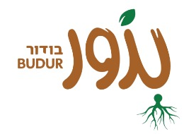
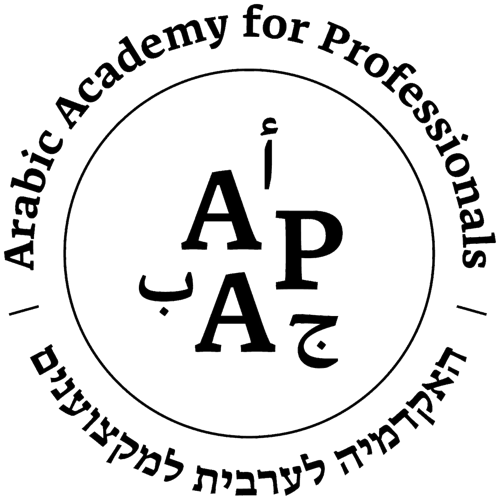

השתלמות למורים לעבריתתל שבעתשפ"ז
כלים דיגיטליים וחווייתיים בהוראת עברית דבורה
בינה מלאכותית לעידוד הדיבור בעברית · בהנחיית שירה רוט זליקוביץ


© שירה רוט זליקוביץ · הוראה יצירתית עם AI · ווטסאפ · להזמנת סדנאות בינה מלאכותית